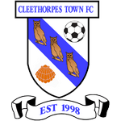
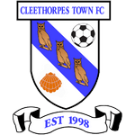
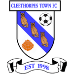
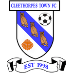
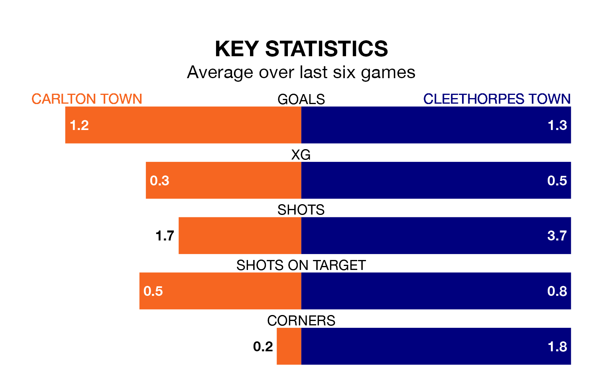

Two of the Northern Premier League Division One East's meanest defences go head-to-head on Tuesday, when Cleethorpes Town visit Carlton Town.
Only one side – Stockton Town FC – has conceded fewer goals than Cleethorpes to date: the away side have let in just 15 goals in 13 games.
Carlton have conceded 17 goals in 13 games, giving them the joint-fourth tightest back line so far this season.
Carlton are eighth in the table after 13 games, of which they have won eight and lost five, earning 24 points.
Cleethorpes are four places behind Carlton Town in 12th, with five wins and four draws putting them on 19 points.
The home side are in mixed form in the Northern Premier League Division One East, with three wins and three losses from their last six games.
With two wins and two draws over that period, Cleethorpes Town's form is slightly worse – they have taken eight points from 18, compared to Carlton's nine.
Carlton's last match was on November 25, a 2-1 loss against Consett.
Cleethorpes lost 2-0 against Stocksbridge Park Steels last time out, also on November 25.
